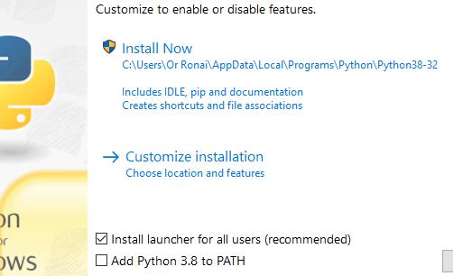

טוב, אחרי המון שעות וניסיונות שונים ומשונים ובעזרתה האדירה של אדווה שהיא ה MVP של פתרון הבעיה הזו, מה שעבד בסוף היה התקנה מחודשת של אנקונדה, הוספה של הנתיב של אנקונדה במערכת (משום מה הוא לא מוסף אוטומטית בעתה ההתקנה למרות שהתיבה מסומנת), והתקנה מחדש של graphviz דרך ה cmd היעודי של אנקונדה.
3 לייקים
אבל כמובן ששום דבר לא יכול ללכת מושלם עם המודול הזה. מתברר שפקודת view עובדת ומייצרת קובץ ויזואלי, אבל פקודת render מחזירה שגיאה חדשה. נראה לי שאפשר לפתור את התרגיל רק עם view, אבל זה עדיין מרגיז בטירוף.
{kind=link}
כמו שכתוב, זו בעיית הרשאות.
נסה להריץ את visual studio בהרשאות administrator, או לתת ל¯draw נתיב מלא.
וכן, אפשר לפתור עם view
2 לייקים
מוסיפה פה את התקלה שקרתה אצלי למי שיקרא את השרשור הזה:
(וינדואוס 10)
כל ההתקנות עבדו אצלי חלק אבל לא יכולתי לעשות import למודל
שגיאה: module not found
הפתרון: להסיר את כל האנקונדות לסוגיהן מהמחשב
לרסט
להתקין מחדש
לרסט
לתקן את ה PATH
להיכנס לanaconda prompt -> where conda
להוסיף בuser pathes שלושה חדשים:
C:\Users\ellen\anaconda3\Scripts\
C:\Users\ellen\anaconda3
C:\Users\ellen\anaconda3\Library\bin
לסגור את כל החלונות השחורים
לפתוח אחד חדש עם קליק ימני run as admin
conda install graphviz
conda install python-graphviz
conda install pydot
כל גרסא אחרת של סדר פעולות הובילה אותי לבור שחור של module not found.
בהצלחה חברים
5 לייקים
היי אז גם אצלי שאני מריצה דרך הcmd יש שגיאה של module not found.
הבעיה אצלי שבעבר כבר התעסקתי עם הPATH ושיניתי שם דברים ככה שזה לא ייגש קודם לanaconda אלא לגרסת פייתון יותר חדשה שהורדתי (3.8.5)
תוכלי לצלם בבקשה את איך נראה ה־PATH שלך?
גם אני מקבלת את אותה השגיאה, להלן רצף הפעולות שביצעתי עם המודול הזה:
הורדתי אותו מהאתר בעזרת התרגום שלך מג’יבריש.
קיבלתי הערה שממנה הבנתי שחסר משהו בהתקנה, אז התקנתי כאדמיניסטרטור באמצעות ה-conda.
לקחתי את ה-path לתיקיה של ה-graphviz בתוך Anaconda3, והוספתי אותו ל-PATH.
לאחר מכן קיבלתי את השגיאה שמוזכרת פה כמה פעמים (מצ"ב כתמונה).
ניסיתי לאחר מכן בהמשך להצעות שראיתי פה להריץ בשורת פקודה כאדמיניסטרטור את dot -v ו- dot -c, כשאחרי הראשון נראה שהוא הוריד איזו קונפיגורציה אבל מ- dot -c נראה שהוא התעלם.
השגיאה נותרה בעינה. איך אפשר להתקדם?
{kind=link}
שלחי לי את מה שיש לך ב־PATH בפרטי 
שלחתי בפרטי,
אני חושבת שמה שעשיתי בעבר היה לשנות את הגרסא של פייתון בcmd. אבל אני חושבת שהמודול graphviz שמור לי בתוך גרסא ישנה יותר של פייתון… וגם pip נגיד…
לגבי pip - זוכרת שדיברנו על משתני סביבה (בהגדרות של windows)?
תוסיפי את הנתיב שנמצא התיקייה scripts של הפייתון 3.8 אצלך. זה אמור להיראות כך:
C:\Users\YOURUSER\AppData\Local\Packages\PythonSoftwareFoundation.Python.3.8_qbz5n2kfra8p0\LocalCache\local-packages\Python38\Scripts
זה נמצא שם. אבל בתיקיה הזאת אין את pip, בניגוד לתיקיה scripts של גרסאות פייתון ישנות יותר
את בטוחה שבתיקייה של scripts של הפייתון שהורדת לא קיים pip? זה חייב להיות built in…
כן אני בטוחה, זה באמת מוזר…
שום קובץ שמתחיל ב-pip?
אפילו לא pip3?
אין. מה עושים? חחחחח
תפתחי את ה-cmd בתור מנהל ותריצי את הפקודה:
python -m ensurepip
תגידי מה קורה אחרי זה
{kind=link}
כשהתקנת את python 3.8.5 איפשרת לו להתקין את pip?
הייתי אומר לך להתקין אותו מחדש ולאפשר גם את ההוספה של PYTHON ל-PATH:

אעשה את זה… ואחרי שאתקין מחדש מה אמור לצאת לי שאני מריצה
ובמידה והpip עובד אז דרכו להתקין את המודול?